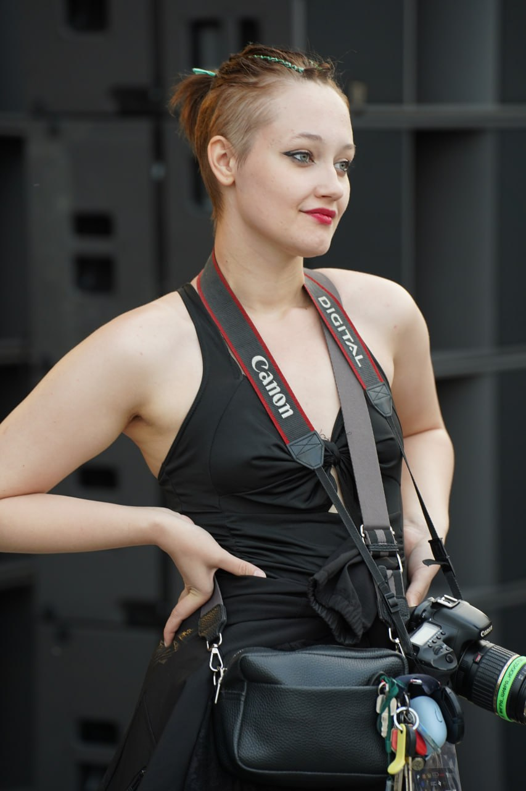

Устьянцева Тата
Меня зовут Тата, и я фотограф. На этом сайте вы можете узнать больше обо мне и моих проектах.
Мои навыки
- Владение камерой и техническими основами
- Понимание и работа со светом
- Композиция и художественное видение
- Навыки общения и работы с людьми